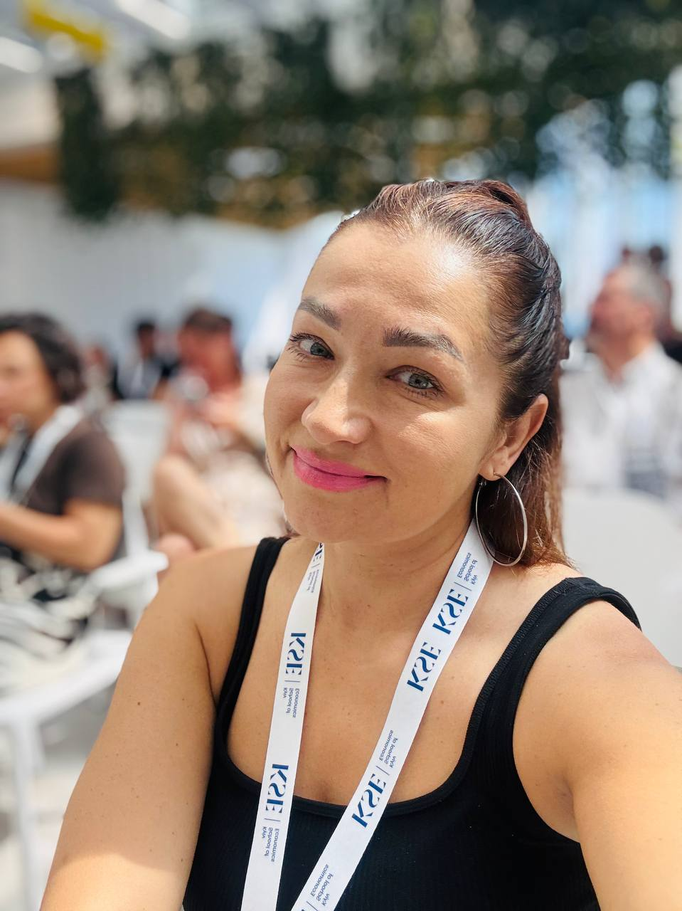
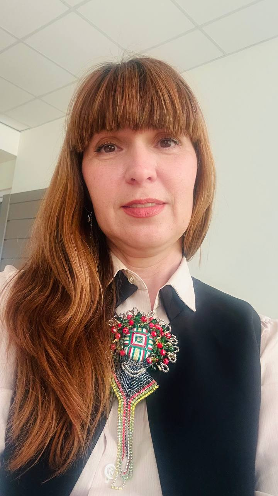
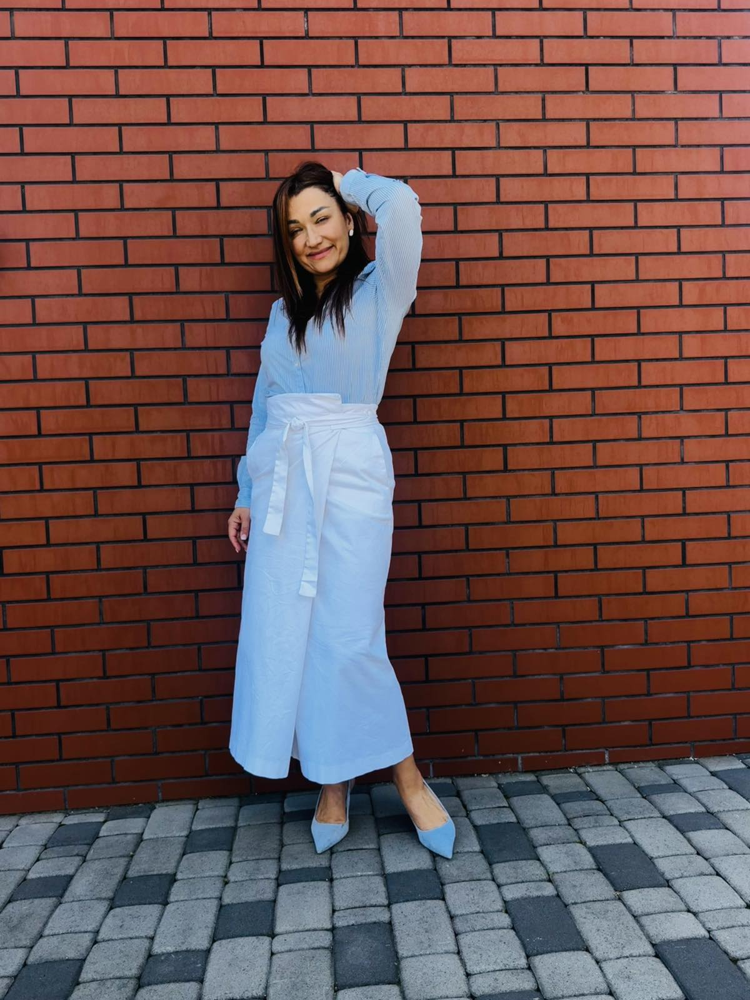

Допомагаю підліткам і дорослим визначити покликання через SWOT-аналіз особистості та техніку ікігай — без тестів з інтернету та загальних порад.
Записався(-лась)? За день до консультації заповни коротку анкету →

Це не "чарівна таблетка" і не тест з інтернету. Це два інструменти, які я поєдную на сесії, щоб ти сам(а) прийшов(ла) до відповіді — я лише тримаю дзеркало.
Сильні сторони, зони росту, можливості та ризики — не бізнесу, а саме тебе.
Перетин того, що любиш, вмієш, що потрібне світу і що приносить дохід.
Вектор, де твій потенціал зустрічається з ринком і твоїм покликанням.
Місія однією фразою і 2–3 конкретні кроки з дедлайнами — не "розберися", а "зроби це до п'ятниці".
SWOT-аналіз особистості та техніка ікігай адаптуються під різний вік і ситуацію.
Вступаєш до університету, але не знаєш куди? Разом знайдемо твої сильні сторони й справжні інтереси.
Відчуваєш вигорання або хочеш змінити сферу? Зміна кар'єри — це не криза, це точка зростання.
Все починається з безкоштовного знайомства. В кожному пакеті є базова частина і персональний бонус — під твою конкретну ситуацію.
Не знаєш що обрати? Починай з безкоштовної консультації — разом визначимось.
Це не "загальна ознайомча розмова". За один безкоштовний дзвінок ти йдеш з конкретним результатом — ось приклад реальної сесії.
Прийшла з запитом «хочу монетизувати навички і почати власну практику», але без диплома і зі страхом брати гроші за роботу.
За 30 хвилин безкоштовної сесії ми зібрали SWOT, заповнили чотири кола ікігай, сформулювали місію одним реченням — її ж словами — і поставили три кроки з дедлайнами.
«Я й не думала, що все це вже є у мене — просто ніколи не дивилася на себе так»
Реальні запити, реальні сесії, реальний результат — без прикрас.

Багато років поруч з дітьми і батьками, пройдений курс душеопікунства — і нуль платних клієнтів, бо страшно брати за це гроші. Звичний сценарій: «ще один курс» замість першого кроку.
Кожна сесія — це нова історія. Після твоєї консультації тут з'явиться і твій результат (за бажанням, анонімно).
Почати свій кейс →
Я знаю, що таке — не розуміти, чого ти хочеш. Я пройшла через 12 кардинально різних сфер. І саме це дало мені унікальне бачення.
Коли у 2022 році я залишилась в Україні, почала пакувати гуманітарку і координувати допомогу. Поступово волонтерство переросло в місію.
Допомагаю українцям вступити до університетів Великобританії безкоштовно за програмою Homes for Ukraine. Це не я навчалась у Великобританії — я допомагаю вступити туди тобі.
Дізнатись докладніше →«Я 3 роки не могла вирішити, куди вступати. Після сесії з Ірою все стало на своє місце. Вона не нав'язала думку — допомогла почути саму себе.»
«10 років в маркетингу, і я повністю вигоріла. Після роботи з Ірою не просто знайшла новий напрямок — відчула себе собою знову.»
«Ми з сином прийшли разом. Формат "Батьки + Підліток" просто ідеальний. Перший раз говорили про його майбутнє без конфліктів.»
Починаємо з безкоштовної 30-хвилинної консультації. Без зобов'язань — просто розберемось разом.
Записатись безкоштовно